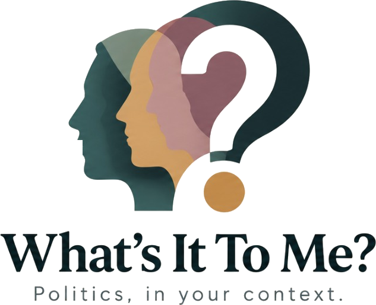

A note for Democracy Club · September 2026
How What’s It To Me? uses your data, and four things we’d love to ask
whatsittome.org is a non-partisan site for UK voters. Enter a postcode and it shows everyone on your ballot, in ballot-paper order and on identical pages, with what each has published quoted from its source. It never ranks, scores or recommends. Our first real test is the Holborn and St Pancras by-election on 8 October.

What we use from Democracy Club
- Postcode to ballot, through the developers API key you set up for us. If it can’t answer, the site falls back to the candidates API.
- Elections and candidates, refreshed every morning from the candidates API: ballots, parties, candidates, statements to voters and photos. It covers every election you list this autumn (26 at the moment).
- Leaflets archived on ElectionLeaflets, shown with the candidate they belong to.
Candidate data is credited to Democracy Club under CC BY 4.0 on the site. Statements appear word for word, labelled as supplied by the candidate to Democracy Club.
How we try to be a good user
- The morning update asks only for what we don’t already hold, re-reads everyone once a week, and backs off whenever the API asks it to slow down.
- Every request names the site and gives our contact address.
- We already spot things worth fixing, such as candidate statements that seem to refer to an earlier election. We’d be glad to send those back to you in whatever form suits.
Who we are
Romily Johnson (Founder and Product Lead, a student) and Barny Trevelyan-Johnson (Technical Lead). Self-funded. We take no money from any party, candidate or campaign, and neither of us belongs to one.
What we’d like to ask
- A token for the candidates API. Without one, our morning update takes about 16 minutes at 10 requests a minute. With one it would take a few, and new candidates would appear sooner.
- Polling-day capacity for postcode lookups. The developers key allows 1,000 lookups a day. We don’t know yet how many people will use the site on 8 October, and we’d rather ask now than fail on the day. What would you suggest?
- Candidate photos. We show a candidate’s photo where you have one, credited to Democracy Club with the licence you record. Which of those licences are fine for us to display, and is there a credit wording you’d prefer?
- Elections ahead of time. The API lists elections about six weeks ahead. Is there a way to see scheduled elections, such as May 2027, before they are formally called, or should we keep our own list until they appear?
Thank you, too, for pointing us to Local Intelligence Hub and the Constituency Dashboards. We have gone through the official datasets behind them, and they are shaping what we add next.